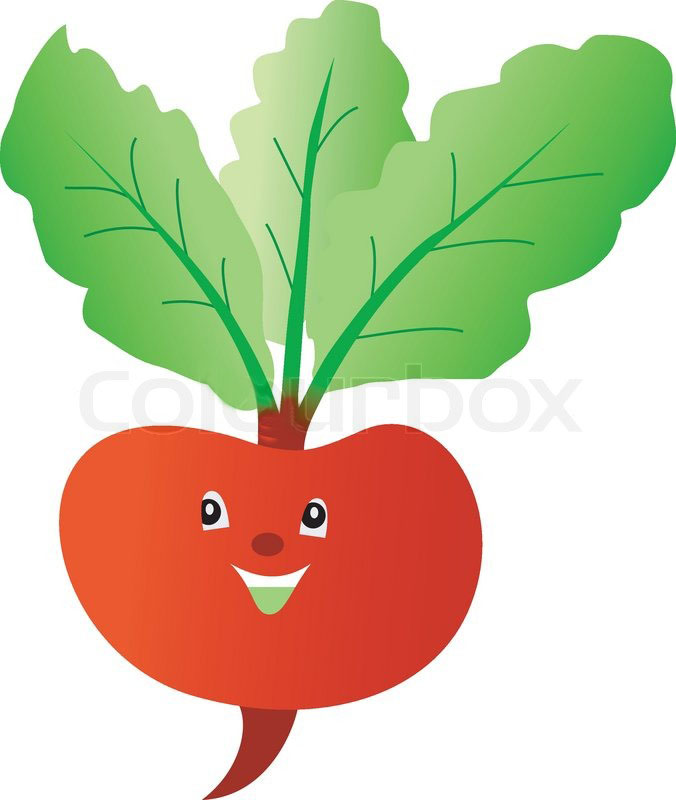

A balanced diet means something different for everyone but the main idea is not being restrictive with what one eats.
No one should be "afraid" of food, because food can be source of health and pleasure!

Having a balanced diet, which means something a little different for everyone (you should do some research depending on your needs/values/beliefs :)) can help many areas of your life : your mood, your energy level, your confidence!
For some little tip son what foods we should be friendly with, here are some foods that are our friends :
- NUTS, let's all be nuts about nuts! They provide antioxidants and are proven to help preventinf cardiovascular disease. Of course, excess is never good so not too many nuts.
Some great nuts to pack in your bag everyday are : almonds, walnuts, cashews, peanuts, pistachios, macadamia nuts. A handful of them is a great addition to our diets!